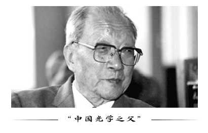
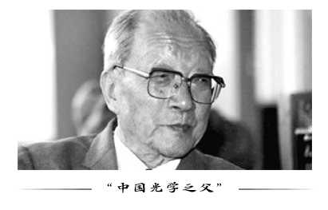

Science and technology are the first productive forces. The state attaches great importance to talents and science and technology.
China's brilliance urgently needs scientific and technological workers to serve the country with scientific and technological innovation and scientific research achievements.
Reporting for the Country with Scientific Research Strength and Promoting the National Strength with Scientific and Technological Innovation
In the late 1950s, many excellent physicists resolutely obeyed the needs of the country, abandoned their familiar majors and devoted themselves to the research and development of "two bombs and one star". Since the reform and opening up, the strategy of rejuvenating the country through science and education has provided new opportunities and injected new vitality into the development of physics in China.
The world's first discovery of an anti-Sigma negative superson earned a doctorate in physics from the University of Berlin, Germany, at the age of 27. In 1964, he independently put forward the idea of realizing nuclear fusion by laser targeting. He was one of the founders of the theory and research of laser inertial confinement fusion in the world. He participated in the experimental research and organizational leadership of China's atomic bomb, hydrogen bomb principle breakthrough and nuclear weapon development, and is one of the main founders of China's nuclear weapon development. He has been engaged in high energy physics, cosmic ray, plasma physics and controlled thermonuclear reactions for a long time. He has made great contributions to the development of nuclear science and technology in China, and has won the National Prize for Scientific and Technological Progress. In 1999, the Central Committee of the Communist Party of China, the State Council and the Central Military Commission awarded him the "Two Bombs and One Star Medal of Merit".

In 1961, the motherland hoped that he would participate in and lead the development of the atomic bomb. Henceforth, he became Wang Jing, an invisible name for 17 years, and devoted himself to nuclear research. Over the next few years, he could not emerge in other academic fields in the world, nor could he exchange his research results on the international stage, nor could he obtain the most cutting-edge scientific and technological information and carry out deep exploration according to his own interests. He can no longer be the world's top scientist, losing the possibility of winning the Nobel Prize. For 17 years, Wang Jing, a scientist aliased as Wang Jing, broke all ties with the outside world and devoted himself to the research and development of nuclear weapons.

 
Wang Dahong—— The "pursuer" of opening up and innovating China's optical cause

Wang Dahong—— The "pursuer" of opening up and innovating China's optical cause
He is the "Father of Chinese Optics", and the Instrument Museum of the Chinese Academy of Sciences is the predecessor of Changchun Institute of Optics and Machinery of the Chinese Academy of Sciences. Until now, Wang Dahong's spirit is still the guiding light for the scientific researchers in the institute.
 Longitudinal "hong" life
Longitudinal "hong" life
In 1958, Wang Daheng led his team to become famous in the national scientific and technological circles for developing "eight pieces" of high-precision optical instruments. They are: one-second precision geodetic theodolite, one-micron precision universal tool microscope, large-scale quartz spectrograph, medium-sized electron microscope, neutron crystal spectrometer, dobby aerial camera projector for topographic survey, infrared night vision instrument and a series of colored optical glass. This is the result of Wang Daheng's painstaking efforts since he founded the Instrument Library. It also gave birth to the first laser in China in 1961, which was born here and later made more important achievements. Chairman Mao, when visiting the achievements of Changchun Institute of Optics and Precision Machinery, was very happy to say: "Once China's destiny is in the hands of the people themselves, it will shine like the sun rising in the East, shining on the earth with its brilliant flame, and any miracle in the world will be created." Come out."
Proponents of the 863 PlanOn March 3, 1986, after some deliberations, four scientists, Wang Dahong, Chen Fangyun, Yang Jiakuo and Wang Ganchang, jointly wrote to Deng Xiaoping and Hu Yaobang and other leaders of the same family, and wrote a letter entitled "Suggestions on Tracking and Studying the Strategic High-tech Development of Outer Battery". "We must start now to track the development of new technologies with the funds and manpower we can afford," the letter said. It should be noted that the competition in today's world is very fierce. If we slacken off a little, we will be in a slump. If we do not grasp at this time, we will lag behind to the point where we can not delete ourselves in the future. Under the situation of accelerating the development of new technology in the whole world, if we do not rush all over the world, the consequences will be unthinkable.
Qian Xuesen—— Father of Chinese MissileAcademically, his representative works such as Engineering Cybernetics, Lectures on Physical Mechanics, Introduction to Interstellar Navigation and On Systems Engineering are still well-known in the world. In practice, Qian Xuesen has long served as the technical leader of China's rocket and space program, and has made tremendous and pioneering contributions to space technology, systems science and systems engineering. It is known as "the father of Chinese missiles", "the father of Chinese rockets" and "the king of missiles". It is Qian Xuesen's effectiveness in returning to China that has pushed China's "two bombs and one star" forward for at least 20 years. There is no doubt that Qian Xuesen and his group have made the most outstanding contribution to New China.
"Who dares to compete with me?" My surname is money, but I don't love money.
My surname is money, but I don't love money.
In 1994, Qian Xuesen won the Ho Liang Ho Li Foundation Award with a prize of HK$1 million. In 2001, he won the Ho Yingdong Lifelong Prize for Scientific Achievement, which is also HK$1 million. According to Tu Yuanji, his secretary and academic assistant, the two bonus checks have not yet been obtained. Qian always asked him to write a letter of attorney and donate the money to desert management in the western part of the motherland. When he donated the bonus, he said, "My family name is money, but I don't love money."
In 1935, when Qian Xuesen was studying in the Department of Aeronautics at MIT, facing some American students'arrogant ridicule of China's ignorance and backwardness, he was dissatisfied with the challenge and said, "China is now lagging behind your United States, but as individuals, we are better than others, who dare to compete with me?" Later, it took only a little time for him to get a master's degree in Aeronautics and win the voice of the Chinese people.
In the diary of the famous biologist Tong Zhou, another early year, he wrote such a pledge: "The Chinese are not fools, they should bring out something to win glory for our nation!" Qian Xuesen confirmed this again.

 Yu Min—— Father of China's Hydrogen Bomb
Yu Min—— Father of China's Hydrogen Bomb
Yu Min's name was once top secret. He remained anonymous for decades until his name was lifted in 1988. In his lifetime, he has only made two public appearances: one in 1999, the state awarded the "Two Bombs and One Star" Medal of Merit; the other in January 9, 2015, when the National Science and Technology Award was awarded, he became the only winner of the highest science and technology award.
He solved a series of basic problems in the breakthrough of China's hydrogen bomb principle and put forward the idea of basic integrity from principle to configuration, which played a key role. He led the research and design of nuclear weapons theory for a long time and solved a large number of theoretical problems. He made an important contribution to the further development of China's nuclear weapons to the advanced international level. Since the 1970s, he has played an important role in advocating and promoting the research of several high-tech projects.
Has passed death three timesAt the beginning of 1969, Yu Min's stomach disease was getting worse and worse because he was running between Beijing and Southwest China, and because of heavy mental pressure and overwork. At that time, China was preparing for the first underground nuclear test and large-scale air explosion thermal test. At that time, he was weak and difficult to walk. He had to lift his legs with his hands to climb the steps slowly. Before the hot test, when Yu Min was dragged by his colleagues to watch the fireball on a hill, he was sweating cold and pale. It was not until October 1971 that his superiors, taking into account Yu Min's contribution and physical condition, allowed him to return to Beijing to take care of his wife Sun Yuqin, who was preparing for war in the southwestern mountainous areas. Late one night, when he was very sensitive, he woke up his wife. When his wife saw him gasping, she quickly helped him up. Unexpectedly, Yu Min had a sudden shock and was saved by a doctor. Later, many people were afraid when they thought of it, if Sun Yuqin was not around that night...
Team：杨鸿 陈深 张燕琼